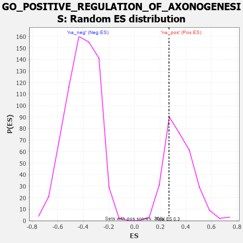

| | | Dataset | 7d |
| Phenotype | NoPhenotypeAvailable |
| Upregulated in class | na_pos |
| GeneSet | GO_POSITIVE_REGULATION_OF_AXONOGENESIS |
| Enrichment Score (ES) | 0.2684916 |
| Normalized Enrichment Score (NES) | 0.76309586 |
| Nominal p-value | 0.7565789 |
| FDR q-value | 0.9342432 |
| FWER p-Value | 1.0 |
Table: GSEA Results Summary
 Fig 1: Enrichment plot: GO_POSITIVE_REGULATION_OF_AXONOGENESIS
Fig 1: Enrichment plot: GO_POSITIVE_REGULATION_OF_AXONOGENESIS
Profile of the Running ES Score & Positions of GeneSet Members on the Rank Ordered List
| PROBE | GENE SYMBOL | GENE_TITLE | RANK IN GENE LIST | RANK METRIC SCORE | RUNNING ES | CORE ENRICHMENT | | 1 | SHOX2 | | | 288 | 0.842 | 0.0984 | Yes |
| 2 | LRP1 | | | 470 | 0.648 | 0.1792 | Yes |
| 3 | SRF | | | 542 | 0.615 | 0.2685 | Yes |
| 4 | TRAK1 | | | 1714 | 0.354 | 0.1778 | No |
| 5 | ISLR2 | | | 2124 | 0.287 | 0.1723 | No |
| 6 | DSCAM | | | 2689 | 0.200 | 0.1334 | No |
| 7 | SLIT2 | | | 2724 | 0.195 | 0.1603 | No |
| 8 | STK25 | | | 3602 | 0.059 | 0.0595 | No |
| 9 | ROBO2 | | | 4066 | -0.018 | 0.0043 | No |
| 10 | ILK | | | 4510 | -0.096 | -0.0361 | No |
| 11 | NTRK2 | | | 4543 | -0.104 | -0.0235 | No |
| 12 | LIMK1 | | | 4684 | -0.136 | -0.0194 | No |
| 13 | IST1 | | | 5442 | -0.305 | -0.0658 | No |
| 14 | STK11 | | | 5922 | -0.443 | -0.0553 | No |
| 15 | DBNL | | | 6084 | -0.501 | 0.0044 | No |
| 16 | ROBO1 | | | 6577 | -0.699 | 0.0542 | No |
| 17 | PAK1 | | | 6691 | -0.757 | 0.1609 | No |
Table: GSEA details [plain text format]

Fig 2: GO_POSITIVE_REGULATION_OF_AXONOGENESIS: Random ES distribution
Gene set null distribution of ES for GO_POSITIVE_REGULATION_OF_AXONOGENESIS